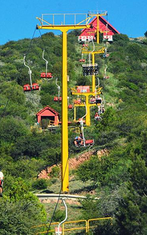
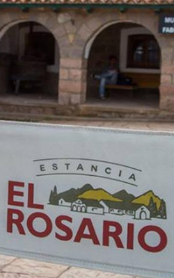
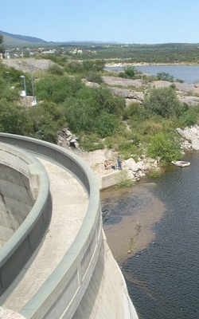
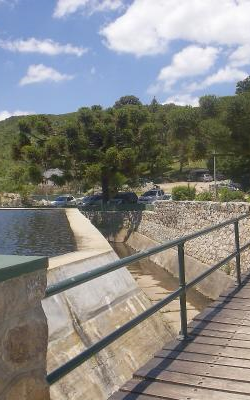
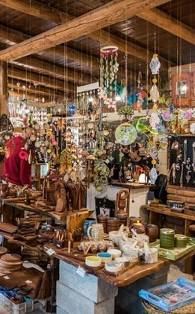

La falda

A 30km de nuestro complejo, se encuentra la ciudad de la falda, donde podran encontrar paseos naturales como las 7 cascadas, o paseos gastronomicos en el centro de la ciudad.
Los Cocos
A solo 11km de nuestro complejo, la famosa ciudad de los cocos, ofrece el conocido laberiento y la aerosilla, ademas de paseos gastronomicos y de compras de artesanias locales.
Estancia El Rosario
Importante punto gastronomico emplazado en la ciudad de La Cumbre. Clasico lugar para comer, recorrer y comprar alimentos elaborados en el lugar.
Dique el Cajon
Inaugurado en 1993, es un dique que se encuentra frente a la ciudad de Capilla del Monte. Se encuentra a 4km de nuestro complejo y podes acceder caminando o en auto y es uno de los lugares que podes observar desde lo alto del complejo.
Dique San Jeronimo
Creado en 1942, en la ciudad de La Cumbre, a 24km de nuestro complejo, podras disfrutar de un hermoso paseo por el dique.
Los Artesanos
A 23 km de nuestro complejo, encontraras un sendero de 6 km de largo, con muchos locales de artesanias de la region.